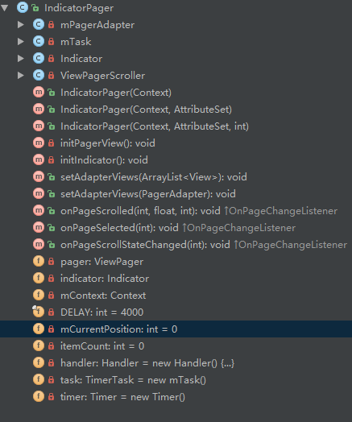

思路不难，先来看看效果图，如下（可能由于网络原因，图片未加载完全导致看起来卡顿）：

使用
在布局文件中， 放入该控件
1 | <?xml version="1.0" encoding="utf-8"?> |
在相关java代码中，获得该控件，并设置显示的View集合
1 | public class MainActivity extends AppCompatActivity { |
到此为止。现在讲讲怎么实现该控件IndicatorPager。
思路
自定义FrameLayout，在里面添加一个自滑动的ViewPager和一个根据ViewPager页数自定义的指示器。
IndicatorPager类整体结构

实现自滑动的ViewPager
initPagerView()
在构造方法中调用，初始化ViewPager()，添加ViewPager。
1 | private void initPagerView() { |
用户在ui线程中调用setAdapterViews 为此控件设置了View集合或者Adapter。在此方法中，开始启动计时任务。并且根据Views的数量，initIndicator()初始化指示器。
1 | /** |
mTask & handler
指示器在后文中再讲解。mTask和handler是实现自滑动的核心。在任务mTask中通过handler发送信息，handler处理信息实现ViewPager的切换。
1 | /** |
1 |
|
pager.setCurrenItem(msg.what,true);第一个参数代表设置的position，第二个参数代表是否显示切换动画。
但是滑动太快，用户体验并不好。在initPagerView()中，addView之前添加以下代码，设置过渡时间为1.5s，提高用户体验。
1 | // ViewPagerScroller是内部类，通过这个类，设置ViewPager切换过度时间，产生阻尼效果 |
ViewPagerScroll类
1 | /** |
还存在一个问题，即人为滑动的情况。此类中实现ViewPager.OnPageChangeListener接口，这里使用
1 | // 设置PagerView页面切换监听器 |
设置监听器。接口要实现三个函数
1 | /** |
在onPageScrolled方法中调用指示器的move方法，实现指示器的相应滑动。
指示器
在上文提到，在设置View集合之后，再初始化指示器。指示器，是根据item数量自定义View。即在该指示器控件中画相应数量的圆（也可以是其他形状，反正自己开心就好~）
添加Indicator到该控件中
1 | // 添加指示器 |
Indicator类
1 | /** |
可以发现，此类中，不仅画了相应数量的圆，还添加了一个mMoveView，严格来说mMoveView才是真的指示器。该view只有一个不同颜色的圆，在move方法中，不断改变它的位置，从而实现随着滑动而滑动。
其实，可以在Github搜索banner，找到现成的控件，可直接使用。